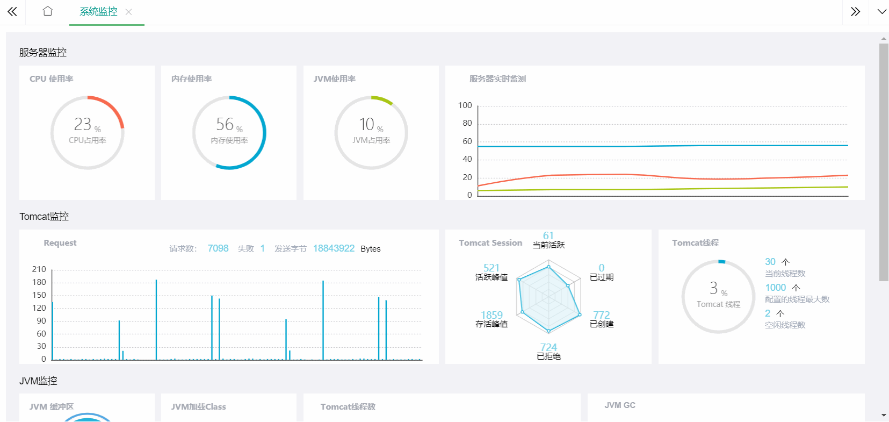

一、 实现效果
先来一张效果图.gif

二、解决方案
1、目前的解决方案（异步加载）
目前的实现方式比较简单，前端定时从后台请求数据并渲染Echarts，这样做的方式比较简单粗暴，但也有如下几个问题：
a、前端定时从服务器获取数据，会对服务器造成巨大的压力，尤其是监控数据分为多个不同请求的情况下。
b、大量的并发请求，势必会阻塞服务器请求，导致响应缓慢甚至服务器瘫痪。
进而看出目前的方案并不是很好的，但他简单啊-
2、稍作改进方案
下一步方案实际上是另一个员工提出来的，但其实并不叫改进，只能叫做妥协，就是后台定时获取监控数据并保存在redis中。之后前端写一个请求按钮，每次点击请求时，再从redis中获取数据，这样做的优点很多，有下面几种：
a、对服务器的压力大量减少，前端最少一次请求即可展现页面。
b、后台服务器定时获取数据，在固定的时间段只有有限的请求次数，不用担心服务器性能问题。
但缺点也很明显，那就是不能动态刷新数据了，必须手动进行刷新。
3、更好的解决方案
更好的方案可以使用长连接进行，前台轮询请求，后台如果有数据的更新则向前端返回新的数据，重新进行渲染。
尽管第三种方式更符合，但也需要进行一定的改动，因此我这里采用最简单的第一种。下一个版本可能会采用第二种，毕竟客户的要求不一样，也不一定非要动态更新图表。
接下来一步一步来实现效果图中的样式
三、前端代码实现
作为一个非专业的前端小白，目前就是能有效果就行，因此代码写的可能比较凌乱。
由于前端采用的是webpack，而Echarts官方从3.1.1开始维护NPM上的package了，因此直接查看Echarts官网进行安装即可。
在webpack中使用ECharts：https://www.echartsjs.com/zh/tutorial.html#%E5%9C%A8%20webpack%20%E4%B8%AD%E4%BD%BF%E7%94%A8%20ECharts
本项目中还使用到了echarts的 liquidfill（水球）插件。
liquidfill: https://github.com/ecomfe/echarts-liquidfill#api
使用下列命令导入
npm install echarts-liquidfill --save
a、按照教程导入需要的模块（按需导入）
/**
index.js
*/
// 引入 ECharts 主模块
let echarts = require('echarts/lib/echarts');
// 引入饼图
require('echarts/lib/chart/pie');
// 引入折线图
require('echarts/lib/chart/line');
// 引入柱状图
require('echarts/lib/chart/bar');
// 引入雷达图
require('echarts/lib/chart/radar');
// 引入水球
require('echarts-liquidfill') // 水球需要单独安装
// 引入提示框和标题组件
require('echarts/lib/component/tooltip');
require('echarts/lib/component/title');
// 引入图例组件
require('echarts/lib/component/legend');
b、统一初始化所有图表，这一部分只是初始化，使Echarts图表绑定在dom上，绑定上的dom都会有一个loading的动画。不做其他处理。
/**
index.js
*/
/** 统一加载所有的echarts */
let initEcharts = () => {
$('.echart').each((index, dom) => {
if($(dom).attr("id") != "jvm_gc"){ //排除最后一个文字域的加载动画
echarts.init(dom).showLoading(); // 初始化所有dom并显示加载动画
}
})
// 设置每个图表的不同初始化样式
echartsSetInitOption();
// 定时刷新
window.setInterval(function() {
getMonData()； //这里用来获取数据
},5000)
}
c、进行每个图表的个性化定制（代码太多，这里只列出一个），图表采用异步加载，因此，这部分处理所有图表的基础样式，也不进行数据填充。整个界面展示阶段这里只加载一次。
/**
index.js
*/
/**
* 初始化所有图表样式（这部分只是公共样式设置，还不会填充任何数据）
*/
let echartsSetInitOption = () => {
// 饼图的公共系列属性
let pieSeries = {
type: 'pie',
radius: ['50%', '55%'],
center: ['50%', '50%'],
avoidLabelOverlap: false,
hoverAnimation: false,
silent: true,
itemStyle: {
normal: {
color: '#F76A4F'
}
},
label: {
normal: {
show: true,
position: 'center',
formatter: function (params) {
return '{value|' + params.value + '} {unit|%}\n{name|' + params.name + '}';
},
rich: {
value: {
fontFamily: 'SFUDINEngschrift',
fontSize: 24,
fontWeight: 200,
color: '#343434',
verticalAlign: 'bottom'
},
unit: {
fontFamily: 'SFUDINEngschrift',
fontSize: 11,
color: '#9F9F9F',
lineHeight: 17,
verticalAlign: 'bottom'
},
name: {
fontFamily: 'Microsoft YaHei',
fontSize: 11,
color: '#9F9F9F',
lineHeight: 20,
}
}
},
},
};
// 基础标题（左上角那个）
let baseTitle = {
top: '5%',
left: '5%',
textStyle: {
color: '#A5A9B2',
fontWeight: 600,
fontSize: 12
}
}
// 公共配置
let pieBaseOption = {
title: baseTitle,
series: [pieSeries]
};
//CPU使用率的默认样式
let data = [];
pieBaseOption.title.text = "CPU 使用率";
pieSeries.name = "cpu_usage_rate";
// CPU使用率
echarts.getInstanceByDom($("#cpu_usage_rate")[0]).setOption(pieBaseOption);
// 初始化结束之后，开始获取服务器数据
getMonData();
d、获取服务器数据并准备绑定数据到echarts。由于不同监控数据在不同的请求接口，因此这里要等所有的数据都加载完毕再进行渲染（一个数据可能会使用到另一个）
/**
index.js
*/
// 获取服务器数据，并将其封装为echarts数据
let getMonData = () => {
// 确保所有数据请求完毕后才进行渲染
Promise.all([serviceMonData(), tomcatMonData(), jvmMonData(), traceMonData()]).then(function (r) {
// 获取到数据之后必定触发数据处理，用来适配Echarts
echartsDataAdapter();
})
}
let serviceMonData = () => {
return ajax.get('/sys/actuate/service/list').then(function (r) {
serviceData = r.list
})
}
let tomcatMonData = () => {
return ajax.get('/sys/actuate/tomcat/list').then(function (r) {
tomcatData = r.list;
})
}
let jvmMonData = () => {
return ajax.get('/sys/actuate/jvm/list').then(function (r) {
jvmData = r.list;
})
}
let traceMonData = () => {
return ajax.get('/sys/actuate/httpTrace/list').then(function(r){
traceData = r.page.list;
})
}
e、绑定数据到Echarts中。这部分也需要进行数据的适配，需要将请求获取到的数据做一定的处理绑定到echarts上。
/**
index.js
*/
/**
* 获取到的数据适配Echarts
*/
let echartsDataAdapter = () => {
let data = [];
let realtimeData = [];
if (serviceData) {
serviceData.forEach((item, index) => {
// CPU使用率
if (item.name == "system.cpu.usage") {
data = [
{ value: 0, name: 'CPU占用率' },
{
value: 0,
name: 'invisible',
label: {
show: false
},
itemStyle: {
normal: {
color: '#E6E6E6',
}
}
}
];
data[0].value = Math.round(item.measurements[0].value * 100);
data[1].value = 100 - Math.round(item.measurements[0].value * 100);
// 将data赋值
let echartsInstance = echarts.getInstanceByDom($("#cpu_usage_rate")[0]);
echartsInstance.setOption({
series: [{
data: data
}]
});
echartsInstance.hideLoading(); // 去除loading
}
})
}
}
四、数据格式
后台采用Actuator进行系统的监控管理。前台请求之后，便使用Actuator查询数据整理之后返回一个JSON文件格式。
由于项目采用前后端分离，后台代码的实现会单独开一篇文章来讲解，所以这里只介绍数据格式。
{
"msg":"success",
"code":0,
"list":[
{
"name":"process.cpu.usage",
"description":"当前应用 CPU 使用率",
"baseUnit":"",
"patterValue":"0.34%",
"group":"2",
"measurements":[
{
"statistic":"VALUE",
"value":0.003432716310723461
}
],
"availableTags":[
]
},
{
"name":"process.start.time",
"description":"应用启动时间点",
"baseUnit":"",
"patterValue":"2019-09-20 08:51:08",
"group":"2",
"measurements":[
{
"statistic":"VALUE",
"value":1568940668.409
}
],
"availableTags":[
]
},
{
"name":"process.uptime",
"description":"应用已运行时间",
"baseUnit":" 秒",
"patterValue":"16079.006 秒",
"group":"2",
"measurements":[
{
"statistic":"VALUE",
"value":16079.006
}
],
"availableTags":[
]
},
{
"name":"system.cpu.count",
"description":"CPU 数量",
"baseUnit":" 核",
"patterValue":"12 核",
"group":"1",
"measurements":[
{
"statistic":"VALUE",
"value":12
}
],
"availableTags":[
]
},
{
"name":"system.cpu.usage",
"description":"系统 CPU 使用率",
"baseUnit":"",
"patterValue":"58.47%",
"group":"1",
"measurements":[
{
"statistic":"VALUE",
"value":0.5847066456213992
}
],
"availableTags":[
]
},
{
"name":"system.memory.usage",
"description":"系统 内存 使用率",
"baseUnit":null,
"patterValue":"65.33%",
"group":null,
"measurements":[
{
"statistic":null,
"value":0.6533496101899664
}
],
"availableTags":null
}
]}
五、总结
按照目前的需求来看，当前的实现方式完全是可行的，但是会对服务器造成大量压力，第二版必定要处理这个问题。
六、参考资料
echarts官网：https://www.echartsjs.com/zh/index.html
Q.E.D.